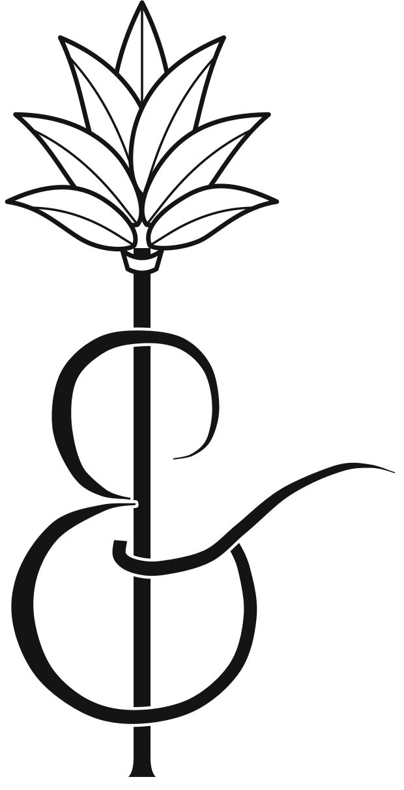
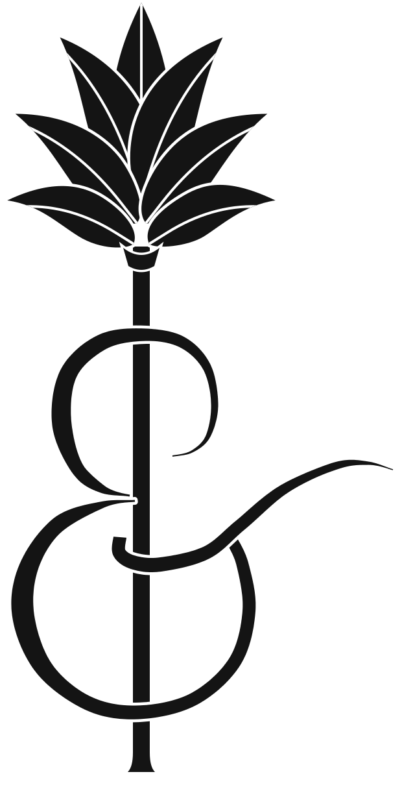
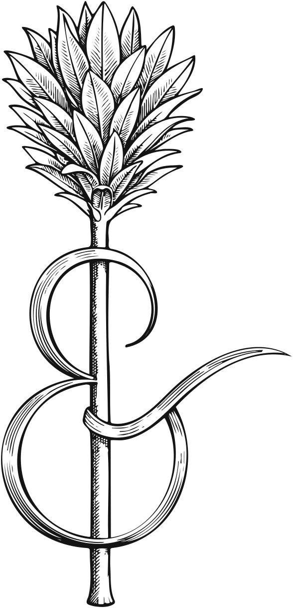
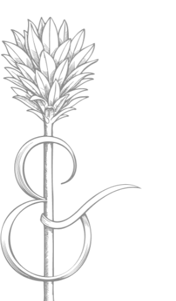
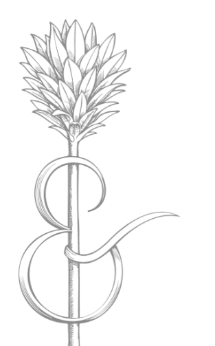

Tree of Life options
Every Tree of Life animation and illustration made for the site so far, in one place. Each animation plays once when the page opens; Replay runs it again. Under each is where it was used and when.
New, 27 October

Intro wordmark with the treeThe intro's widely spaced ARBOR & EYE with the engraved Tree of Life in place of the ampersand, set as it is in the header logo: the crown rises above the capitals and the tree's own ampersand sits on the line. In white, drawn as a vector so it stays sharp at any size.uploads/intro-logo-tol.svg
The same, over the first paintingAs it would come up in the homepage intro: same width and the same light dark panel as the current wordmark. The panel is a little taller to make room for the crown.Not on the homepage yet
Simplified favicon, inkJust the solid 7-leaf crown on a short stem, in ink, with no ampersand, so it still reads at 16 pixels. Shown at 16, 32 and 64 pixels on a light and a dark tab bar.uploads/favicon-crown.svg
Simplified favicon, tileThe same crown in white on a rounded ink square, so it holds up on both light and dark browser tabs.uploads/favicon-crown-tile.svg
Current favicon, for comparisonThe engraved tree and ampersand now in the tab. At 16 pixels the fine lines turn to a grey smudge.assets/favicon.png
Animations
A · Tree settles into the ampersand
The engraved tree fades in large above the wordmark, the letters come up, then the tree shrinks and rises into place and turns into the ampersand, staying behind it. 5.3 seconds.
The animated header logo of the second homepage, "H2" (Home-animated.dc.html, September 2026; removed 2 October)
B · Tree settles, then fades away
As A, but as the tree turns into the ampersand it fades away, leaving the plain wordmark, which eases up 8px to where the static logo sits on every other page. 5.3 seconds.
The animated header logo of "H4" (Home-animated-3.dc.html, September 2026; removed 2 October)
C · Engraved tree into the simplified tree
The engraved tree fades in at its resting size with the letters, holds, and crossfades into the simplified v3 Tree of Life (outlined 7-leaf crown, solid stem and ampersand), which the logo rests on. Nothing moves. 6.6 seconds.
The animated header logo of the homepage until 11 October, kept as index-b.html

D · Homepage intro over the first painting
The white Tree of Life fades in over the painting (3.2s), holds, and fades away slowly; part-way through, ARBOR & EYE comes up on a light dark panel, holds, and fades off. About 11 seconds.
On the homepage now (index.html) and on H1
Illustrations
Header logoARBOR & EYE with the engraved Tree of Life: the logo on every page now.uploads/logo-tol.svg
Header logo, v3 treeThe logo with the simplified v3 tree (outlined 7-leaf crown, solid stem and ampersand). Trial, 9 October.uploads/logo-tol-v3.svg

v3 tree on its ownThe simplified v3 tree that animation C ends on; also used on G6's scrollbar handle and G7's marker.uploads/tol-v3.svg
Header logo, first 7-leaf draftThe first simplified 7-leaf tree in the logo, replaced the same day by v3. 9 October.uploads/logo-tol-simple.svg (restored from the history)

7-leaf tree, solidThe first draft's tree on its own, filled solid. 9 October.uploads/tol-simple-solid.svg (restored from the history)

Engraved tree, inkThe engraved Tree of Life alone, in ink.uploads/arbor-mark-ink.svg
Engraved tree, whiteThe white tree of the homepage intro (animation D), shown here on a dark ground.uploads/arbor-mark-white.svg

Engraved tree, darkThe dark tree once set behind the homepage painting, and the About page's large Tree of Life.uploads/arbor-mark.png

Early markOne of the first marks, from the site's start (14 September).assets/logo-mark.png

Early mark, secondThe other first mark (14 September).assets/mark.png
FaviconThe Tree of Life in the browser tab.assets/favicon.png
Intro wordmarkARBOR & EYE as it comes up in the homepage intro (animation D), widely spaced.uploads/intro-logo-spaced.png